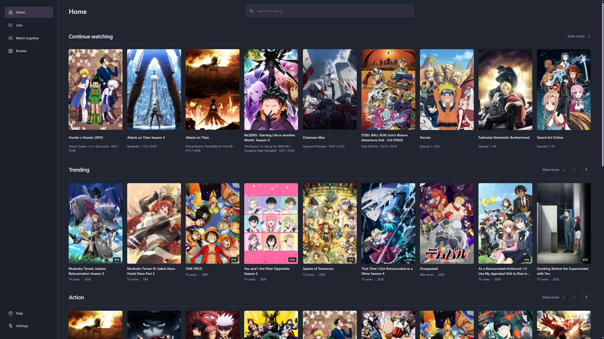
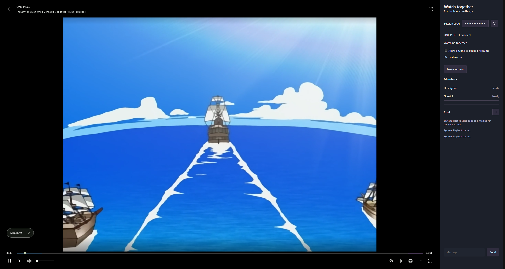
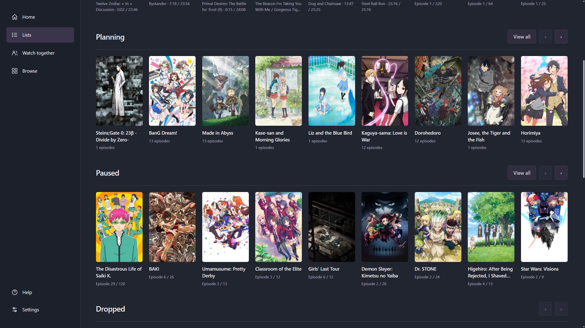

Watch together.
Create a session and invite your friends with a code or through Discord. Watch in sync and chat through the app


Connect your AniList.
Your lists and watch progress sync instantly.
Connect from Nen
- Open Settings, then Account.
- Select Connect AniList and sign in to your AniList account.